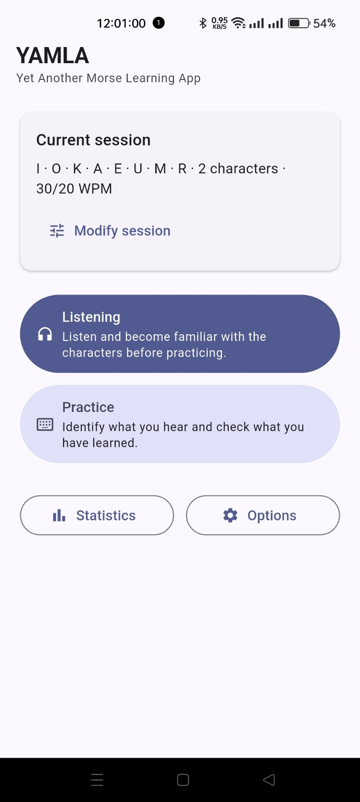
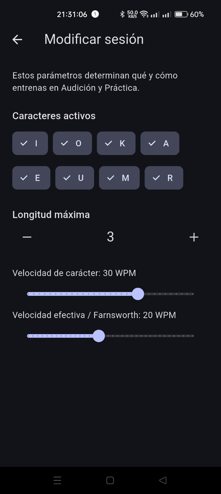
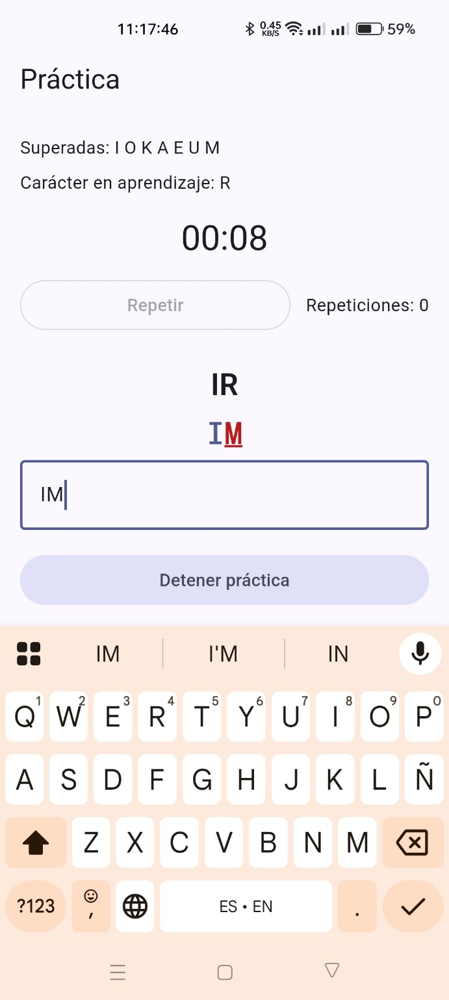

Progressive learning
Aprendizaje progresivo
Characters and sequence length are introduced gradually as reception improves.
Los caracteres y la longitud de las secuencias se introducen gradualmente a medida que mejora la recepción.
Yet Another Morse Learning App
A simple Android app for learning Morse code reception by sound, progressively, without counting dots and dashes.
Una aplicación Android sencilla para aprender recepción de código Morse por sonido, de forma progresiva, sin contar puntos y rayas.

Characters and sequence length are introduced gradually as reception improves.
Los caracteres y la longitud de las secuencias se introducen gradualmente a medida que mejora la recepción.
Training encourages direct recognition of each character instead of consciously counting dits and dahs.
El entrenamiento busca reconocer directamente cada carácter, en lugar de contar conscientemente puntos y rayas.
Answer interactively in Practice, or use continuous Listening simply to train your ear.
Responde de forma interactiva en Práctica, o usa la Audición continua simplemente para entrenar el oído.
Adjust character speed and effective Farnsworth speed independently.
Ajusta de forma independiente la velocidad de carácter y la velocidad efectiva Farnsworth.

Choose the active characters and maximum sequence length. Character speed and effective Farnsworth speed are separate, so you can hear each character at a realistic speed while keeping enough space to recognise it.
Elige los caracteres activos y la longitud máxima de las secuencias. La velocidad de carácter y la velocidad efectiva Farnsworth son independientes, para escuchar cada carácter a una velocidad realista manteniendo el espacio necesario para reconocerlo.

Listen to a Morse sequence, type what you heard and get immediate character-by-character feedback. Progress is based on actual reception practice.
Escucha una secuencia Morse, escribe lo que has oído y recibe corrección inmediata carácter a carácter. La progresión se basa en la práctica real de recepción.
YAMLA works completely offline. It requires no account and uses no telemetry, analytics, advertising, cloud services or automatic update checks. Learning data and settings stay on your device.
YAMLA funciona completamente offline. No necesita cuenta y no utiliza telemetría, analítica, publicidad, servicios en la nube ni comprobaciones automáticas de actualizaciones. Los datos de aprendizaje y los ajustes permanecen en tu dispositivo.
Official builds are published in the repository's Releases section with a SHA-256 checksum. Updates are intentionally manual.
Las versiones oficiales se publican en la sección Releases del repositorio con su checksum SHA-256. Las actualizaciones son intencionadamente manuales.
This public repository is used for the presentation and distribution of YAMLA. It does not contain the application's source code.
Este repositorio público se utiliza para la presentación y distribución de YAMLA. No contiene el código fuente de la aplicación.